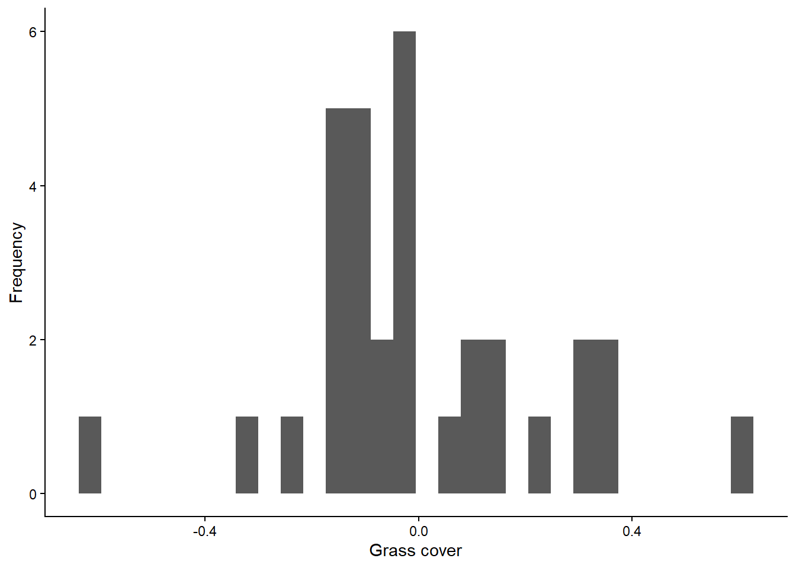
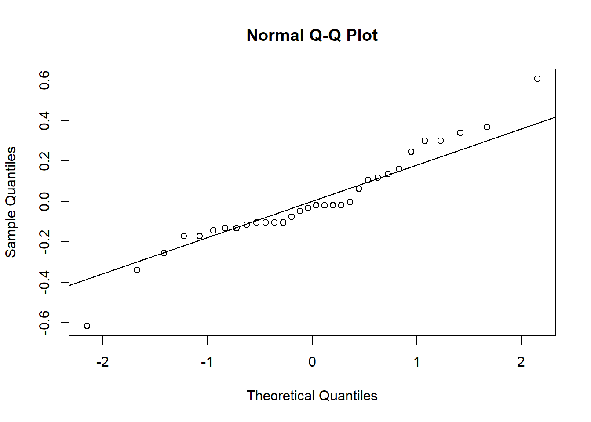
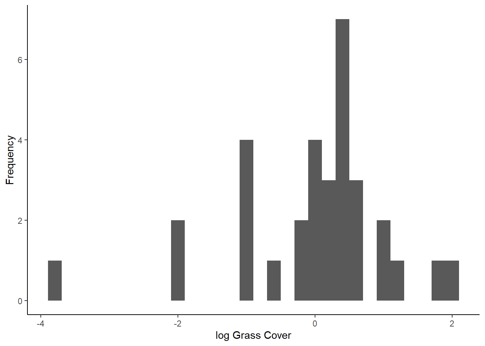
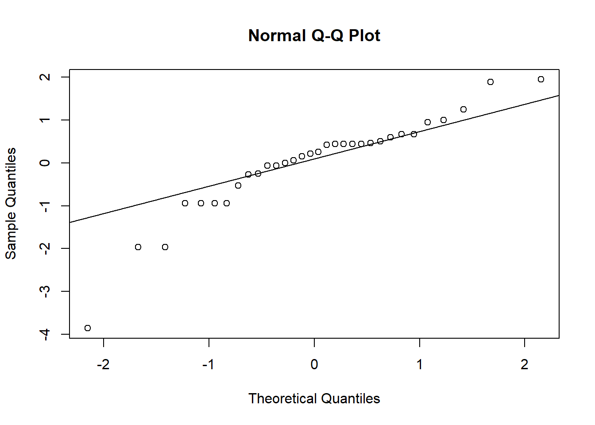
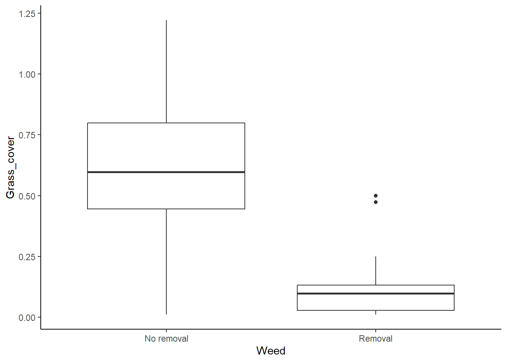
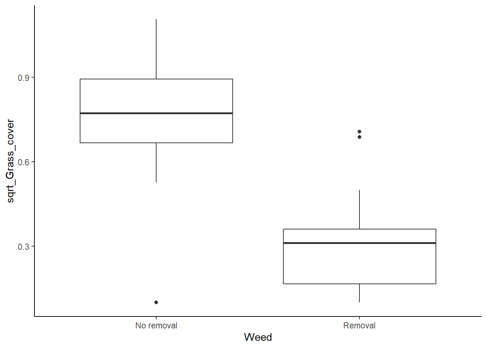

In this lesson, we will cover how to test two assumptions (normality and equal variances) of t-tests and other similar models and what to do when the assumptions are violated. Note that these assumptions apply whether we are using a classical frequentist approach or a maximum likelihood approach, and the methods we use for testing and addressing violations of assumptions is the same for both.
For this lesson, we will work with a new data set that contains data from an experiment that was done to test for the effect of invasive grass removal on the plant community. As a first pass, the researchers simply wanted to know if removing the grasses from the plot at the start of the growing season was effective for reducing the invasive grass cover in the plot at the end of the growing season. You will work with two variables from this data set. Your independent variable is weed removal (the name of this variable is “Weed” in the data set), and your dependent variable is grass cover (the name of this variable is “Grass_cover” in the data set). Because we have a categorical independent variable with two values and a continuous dependent variable, a t-test is an appropriate test for these data, if the assumptions are met.
Download the InvasiveGrass.csv file from Canvas. Set your working directory in R to the folder that contains the data file.
Then load your data file into R using the usual ‘read.csv’ function. I am calling the data object “grass” for this example.
grass <- read.csv("InvasiveGrass.csv")We will also use the ggplot2 package for this lesson, so load that package now as well:
library(ggplot2)The assumption normality for t-tests is that the residuals (the leftover variation that is not explained by our model) are normally distributed. Therefore, in order to test this assumption, we need to first run our model and save the residuals to test.
We will run a t-test using the ‘lm’ function, just like we did in the t-test lesson when we used the maximum likelihood approach, and we will store the test output in an object called “grass_ttest”. We use the ‘lm’ function instead of the ‘t.test’ function because the ‘t.test’ function doesn’t save the residuals from the test. However, the models built by the two functions are exactly the same, so the residuals are the same regardless of the approach we use to test the models. We can still choose to use either approach after checking our assumptions.
grass_ttest <- lm(Grass_cover ~ Weed, data = grass)We will now save the residuals from the model using the
resid function. Then we will store the residuals in a data
frame, so we can graph them using ggplot. We will store the
residuals in a data frame called “resids” and the variable name within
the data frame will be “Residuals”.
# Save residuals
grass_resid <- resid(grass_ttest)
# Store residuals in a data frame
resids <- data.frame(Residuals = grass_resid)Now that we have saved our residuals, we can move on to testing whether they are normally distributed.
The first way to check for normality of residuals is to make a histogram to determine if the residuals look like they are normally distributed, or at least symmetrical. We will makes this graph using the residuals that we saved from our model in the previous section.
ggplot(resids, aes(x=Residuals)) +
geom_histogram() +
labs(x="Grass cover", y="Frequency") +
theme_classic()## `stat_bin()` using `bins = 30`. Pick better value with `binwidth`.
Do the residuals look normally distributed?
There is another type of graph that is useful for visualizing the normality of residuals, called a qqplot. This type of graph compares the residuals from a model with residuals that would be predicted based on a normal distribution. If we graph the residuals from our model against the predicted residuals, we would expect them to form a straight line if the residuals are normally distributed. If they do not form a straight line, that suggests the residuals are not normally distributed.
To make a qqplot to test for a normal distribution, we can use the
qqnorm function. Then we can use the qqline
function to add a reference line to the plot, showing where the points
should fall if the data are normally distributed. The input (argument)
for both of these functions in the object with our saved residuals
(grass_resid).
qqnorm(grass_resid)
qqline(grass_resid)
When the points fall close to the line like this, that means that the distribution of our residuals is close to normal. Based on both types of graphs, it looks like our data are normally distributed, but we’ll cover a formal test for this as well.
The Shapiro-Wilks test is a formal test to determine if a distribution is normal. Our null hypothesis for this test is that the residuals are normally distributed.
Running the test is pretty straightforward. We will use the
shapiro.test function, and the only argument we need to
input is our residuals from the models we built.
shapiro.test(grass_resid)##
## Shapiro-Wilk normality test
##
## data: grass_resid
## W = 0.95069, p-value = 0.1507Based on the output of the tests, are the residuals normally distributed?
Remember, though, there are downsides to this test. When you interpret the results, be sure to interpret them in the context of your sample size.
We have established that our data are normally distributed, but what if they weren’t? What would we do about it?
If our residuals are not normally-distributed, particularly when we have skewed data, often a good option is to log transform our data. The log-transformed data will often be more normally distributed, and if they are, we can run our test on the log-transformed data. Even though our residuals are okay in this example, let’s try this transformation on our grass data and see what effect it has, just for practice!
There is one catch before we do the log transform: we have some zeroes in our grass cover data, and the log of zero is undefined. Because there are only a few zeroes, we will add a small values to these zeroes before doing the transform. Based the the grass cover values, which are mostly between 0 and 1, we will use 0.01 as our small value.
To add this value, we first have to figure out which grass cover values are equal to zero. We can use the handy ‘which’ function, which tells us which values in a vector fit a particular criteria (in this case, being equal to zero). We have to input the data frame and variable names (‘grass$Grass_cover’), as well as the criteria (‘==0’). We will save the position of the values that fit our criteria in an object called “indexes”.
indexes <- which(grass$Grass_cover==0)We can use the indexes to change the values from zero to 0.01. In the code below, ‘grass$Grass_cover[indexes]’ will tell R to pull out the values that we identified as being equal to zero, and ‘<- 0.01’ will change them to 0.01.
grass$Grass_cover[indexes] <- 0.01Now we can log-transform our data and add a new column to the grass data frame to store our log-transformed grass cover data. I am calling the new variable “log_Grass_cover”.
grass$log_Grass_cover <- log(grass$Grass_cover)Finally, we will check to see if the log transformed data are normal, using the same approach as above.
First, run the t-test, this time using “log_Grass_cover” as our dependent variable, save the residuals, and put them in a data frame.
grass_ttest_log <- lm(log_Grass_cover~ Weed, data=grass)
resid_log <- resid(grass_ttest_log)
resids_log <- data.frame(Residuals = resid_log)Now, we will make our graphs to check normality. Start with the histograms:
ggplot(resids_log, aes(x=Residuals)) +
geom_histogram() +
labs(x="log Grass Cover", y="Frequency") +
theme_classic()## `stat_bin()` using `bins = 30`. Pick better value with `binwidth`.
Next, make the qqplots:
qqnorm(resid_log)
qqline(resid_log)
And finally, we’ll run the Shapiro-Wilks test on the new residuals:
shapiro.test(resid_log)##
## Shapiro-Wilk normality test
##
## data: resid_log
## W = 0.89604, p-value = 0.004918Because our residuals were okay to begin with, after log-transforming the data makes them look worse! It’s definitely better to proceed with the un-transformed data so far, but we need to check our other assumption first.
Another assumption of linear models is that the variance of our dependent variable is equal for different values of our independent variable.
For this one, we do not need to run the models first to save residuals, so let’s jump right into the testing.
We will start with a simple visual test: making a box plot to compare the variation between the different categories.
ggplot(grass, aes(x=Weed, y=Grass_cover)) +
geom_boxplot() +
theme_classic()
It looks like the variances are pretty different between the two groups, so we seem to have a problem here, but we will look at the results of a formal test for equal variances too.
Levene’s test is a formal test that will check for equal variances. Note that is tends to be a bit sensitive, so it will sometimes pick up small differences in the variances that are not a problem, particularly if you have large sample sizes. With the Levene’s test, we are testing the null hypothesis that the variances are equal. Therefore if the p-value is less than 0.05, that suggests that the variances are not equal.
The function for the Levene’s test is in the car
package, so install (install.packages("car")) and load that
package first.
library(car)## Loading required package: carData## Warning: package 'carData' was built under R version 4.2.3Now we can run the test:
leveneTest(Grass_cover ~ Weed, data = grass)## Warning in leveneTest.default(y = y, group = group, ...): group coerced to
## factor.## Levene's Test for Homogeneity of Variance (center = median)
## Df F value Pr(>F)
## group 1 6.0694 0.01971 *
## 30
## ---
## Signif. codes: 0 '***' 0.001 '**' 0.01 '*' 0.05 '.' 0.1 ' ' 1Don’t worry if you get a warning message. It is just telling you that when it ran the test, it converted “Weed” from a character variable to a factor variable. Take a look at the p-value for the test. Based on this p-value, are the variances equal?
We have established that we don’t have equal variance between our categories, so what can we do? The first thing we can try is transforming our data. If our data are skewed (not normally distributed), a log transform might help. However, if our data have a pretty symmetrical distribution (which we already determined they do), a log transform is unlikely to help. Instead, we can try a square root transform. Let’s see if that helps here.
Like with the log transform, we will add a new variable to our data frame, but this time we will take the square root of our grass cover variable.
grass$sqrt_Grass_cover <- sqrt(grass$Grass_cover)Now, we can use our tests again to see if this helped.
Start with the boxplot:
ggplot(grass, aes(x=Weed, y= sqrt_Grass_cover)) +
geom_boxplot() +
theme_classic()
It looks a lot better now, but we will check our Levene’s test too.
leveneTest(sqrt_Grass_cover ~ Weed, data = grass)## Warning in leveneTest.default(y = y, group = group, ...): group coerced to
## factor.## Levene's Test for Homogeneity of Variance (center = median)
## Df F value Pr(>F)
## group 1 0.1745 0.6791
## 30Okay, it looks good, so our transform worked. We can now safely run a t-test using the square-root-transformed data.
At this point, we can test the model using either a classical frequentist approach or a maximum likelihood approach. I will show both methods here, but, again, note that this is just for the purposes of demonstration. Normally, you would just choose one approach to use.
To run a t-test using the classical frequentist approach, we will use the same t.test function that we learned in the last lesson. Note, however, that we now want to use the square-root-transformed variable (“sqrt_Grass_cover”) instead of the raw grass cover variable.
grass_ttest_sqrt <- t.test(sqrt_Grass_cover~Weed, data=grass,var.equal=TRUE)
grass_ttest_sqrt##
## Two Sample t-test
##
## data: sqrt_Grass_cover by Weed
## t = 5.8639, df = 30, p-value = 2.041e-06
## alternative hypothesis: true difference in means between group No removal and group Removal is not equal to 0
## 95 percent confidence interval:
## 0.2846221 0.5888279
## sample estimates:
## mean in group No removal mean in group Removal
## 0.7529518 0.3162268Based on the p-value, would you reject the null hypothesis that weed removal does not affect end-of-season grass cover?
Just like the last lesson, to use the maximum likelihood approach, we start by using the ‘lm’ function to build both the null and alternative models. Then we use the ‘AIC’ function to compare the AIC values for the two models. Remember, the model with the lower AIC value is the better model for our data.
# Build models
grass_null <- lm(sqrt_Grass_cover~1, data=grass)
grass_alt <- lm(sqrt_Grass_cover~Weed, data=grass)
# Compare AIC values
AIC(grass_null, grass_alt)## df AIC
## grass_null 2 17.502090
## grass_alt 3 -4.935758Which model is best? Is it significantly better than the other model?
If the variances still aren’t equal after transforming the data, we can use a test, called the Welch’s test, that doesn’t assume equal variances. This will work for both a t-test and and ANOVA. Even though our square root transform did work in this example, let’s practice how to do a Welch’s test.
To run the Welch’s test, we will use the same ‘t.test’ function that we used for a regular t-test, but we will change one argument. Instead of using the “var.equal=TRUE” setting, we will change it to “var.equal=FALSE”. Notice that we can run this test will the un-transformed Grass_cover variable because with this test, it is fine if the variances are not equal.
t.test(Grass_cover~Weed,grass,var.equal=FALSE)##
## Welch Two Sample t-test
##
## data: Grass_cover by Weed
## t = 5.8226, df = 22.549, p-value = 6.711e-06
## alternative hypothesis: true difference in means between group No removal and group Removal is not equal to 0
## 95 percent confidence interval:
## 0.3116919 0.6558079
## sample estimates:
## mean in group No removal mean in group Removal
## 0.6169443 0.1331944The output is similar to what you have seen before. You should see the t statistic, the degrees of freedom (df) and the p-value. Note that the df is a little different here that what you would get with a regular t-test. This is because we lose more degrees of freedom with the Levene’s test because we are calculating separate variances for each group.
Note that the conclusion you would draw based on the Welch’s test using the un-transformed grass cover data is the same conclusion you would draw using the regular t-test on the square root transformed grass data.
Use the steps below to test out this process on a different data set! You will work with data on the impact of mycorrhizal inoculation on plant density. Download the mycorrhizae.csv file from Canvas. When you are ready to start working with the data in R, be sure to set your working directly, load the data set, and load the ggplot2 package before proceeding.
I will post an answer key to these questions next week.